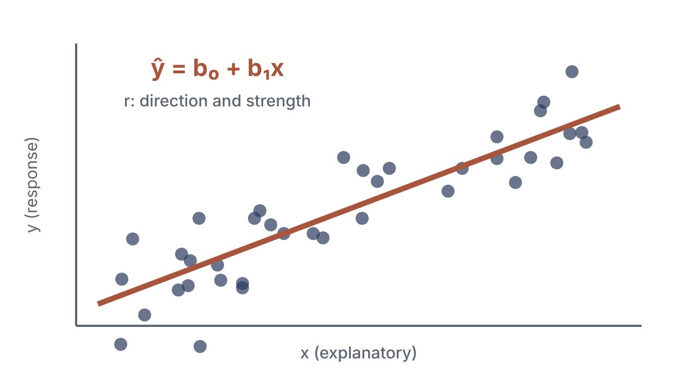

Block 1 · Cognitive Psychology
How does a mind turn the world into thought?
Eight themes from attention to AI, each with visual lecture notes, videos and in-depth answers, plus practice papers and one-page memory sheets.
Every course I take, turned into something I can actually learn from: course stories, visual notes, videos and practice papers, in one calm place. Year 2 is in full swing; Year 3 is waiting on the map.
Four blocks, each with courses running side by side. Highlighted courses already have study tools: tap one to open it. The rest fill in as the year goes on.
Each course starts with its story: the whole course as one journey, before the details.
Eight themes from attention to AI, each with visual lecture notes, videos and in-depth answers, plus practice papers and one-page memory sheets.

Eight stops on one map of tests, from proportions to repeated-measures ANOVA, with SPSS practice on real-looking datasets.
My video series explains each theme in plain words, with drawings. Next to it: the tools I use every week.
Kept here on purpose, so the hub grows with the bachelor. It fills in as the choices are made.
A minor of choice, inside or outside psychology.
ComingThe complete library: every theme page, lecture, practice set and video, grouped by course.
Loading the study library…